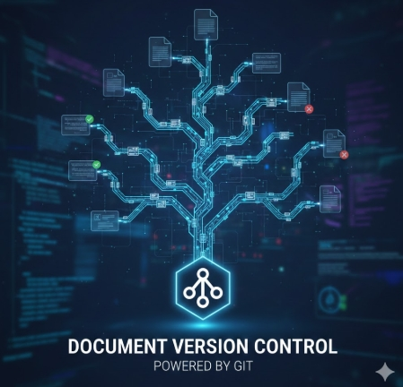
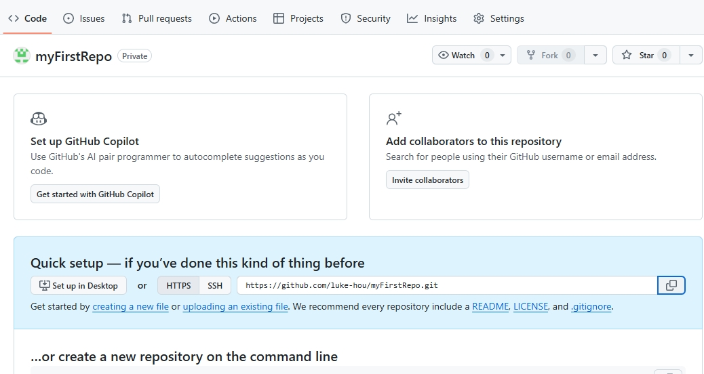
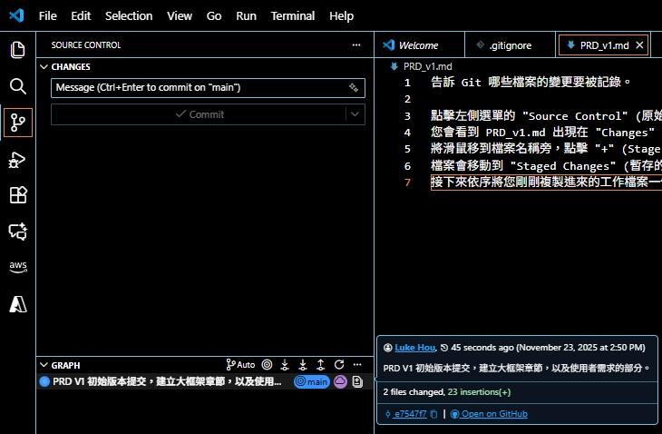

Gemini CLI 教學【番外篇】：PM 的 AI 協作護城河—無痛導入 Git 版控
發布日期：2025年11月21日
在與 AI 協作的過程中，您是否曾遇過這些崩潰時刻？
- 「AI 剛剛改得太興奮，把原本寫好的登入流程覆蓋掉了，但我忘記原本寫什麼了...」
- 「老闆說 V3 版本最好，但我現在已經改到 V10 了，舊檔案早就不知道丟哪去了...」
- 「這段需求是誰要我改的？當初我為什麼要這樣改？完全想不起來...」
別擔心，這不是您的錯，是工具的問題。這篇教學將帶您建立一套「文件時光機」。我們將使用工程師每天都在用的神器—Git，但我們不寫程式碼，也不背複雜指令。我們只學最核心的「存檔」技巧，讓您能隨時穿越時空，找回任何一個版本的檔案。
第一階段：打造時光機 (安裝與設定)
工欲善其事，必先利其器。我們需要先安裝兩個軟體：Git (時光機引擎) 和 Visual Studio Code (時光機的操作面板)。
步驟一：安裝 Git
Git 是負責在背景默默記錄所有變更的核心引擎。
Windows 使用者
- 前往 Git 官網下載頁面。
- 點擊 "Click here to download" 下載安裝檔。
- 執行安裝檔，請一路點擊 "Next" 到底，所有預設選項都已經足夠完美，不需要修改任何設定。
macOS 使用者
- 打開您的「終端機 (Terminal)」App (按 Cmd+Space 搜尋 Terminal)。
- 輸入
git --version並按 Enter。 - 如果您看到版本號，代表已經安裝好了。
- 如果系統跳出視窗問您是否要安裝「Command Line Developer Tools」，請點擊「安裝」並依照指示完成。
步驟二：安裝 Visual Studio Code (VS Code)
這是我們編輯文件和操作 Git 的介面。它比 Word 更輕量，比記事本更強大。
- 前往 VS Code 官網 下載並安裝。
- 安裝完成後打開 VS Code。
步驟三：設定您的「簽名」
在時光機運作前，它需要知道「你是誰」，這樣未來的您才知道這些變更是誰做的。
- 打開 VS Code。
- 點擊上方選單的 "Terminal" (終端機) > "New Terminal" (新增終端機)。
- 下方會出現一個黑色或深藍色的視窗，請依序複製貼上以下兩行指令 (記得將引號內的內容改成您自己的)：
git config --global user.name "您的英文名字"
git config --global user.email "您的Email"例如：
git config --global user.name "John Doe"
git config --global user.email "johndoe@example.com"圖說：在終端機輸入這兩行指令，按下 Enter 後不會有特別的顯示，這是正常的。
第二階段：建立雲端保險庫 (GitHub)
為了避免電腦壞掉導致資料遺失，我們要把時光機的紀錄同步到雲端。GitHub 就是目前全世界最大的程式碼/文件託管平台。
步驟一：註冊與建立專案
- 前往 GitHub 註冊一個免費帳號。
- 登入後，點擊右上角的 "+" 號，選擇 "New repository" (新增專案)。
- Repository name：填寫專案名稱 (例如：
My-PRD-Project)。 - Private：重要！請務必勾選 Private (私有)，這樣只有您自己看得到這些文件。
- 點擊最下方的 "Create repository" 按鈕。
圖說：請務必選擇 Private，保護您的商業機密。
步驟二：取得保險庫地址
建立完成後，您會看到一個充滿程式碼的頁面。請找到 "HTTPS" 的網址欄位，點擊旁邊的複製按鈕。
圖說：點擊這個小按鈕複製網址。
第三階段：啟動連結 (Clone 與 首次驗證)
這是最關鍵的一步，我們要把雲端的保險庫「複製 (Clone)」一份到您的電腦上，並完成第一次的身分驗證。
步驟一：Clone 專案到電腦
- 回到 VS Code 主頁 (起始畫面)。
- 點擊：
Clone Git Repostory。 - 在上方跳出的搜尋框貼上剛剛從 GitHub 複製的網址，按下 Enter。
- 選擇一個您想存放這個專案的資料夾，例如
C:\GitSrc。(請注意，不必手動再建立下一層資料夾，因為我們 Clone 後就會在地端自動建立那個資料夾。)
步驟二：首次驗證 (撞牆期請注意！)
當您第一次嘗試連結 GitHub 時，VS Code 會跳出一個請求授權的視窗。這是一次性的，請不要驚慌。
- VS Code 會跳出提示："The extension 'GitHub' wants to sign in using GitHub." (GitHub 擴充套件想要登入)。
- 請點擊 "Allow" (允許)。
- 瀏覽器會自動打開 GitHub 的授權頁面，請點擊綠色的 "Authorize Visual-Studio-Code" 按鈕。
- 瀏覽器可能會問您是否要打開 VS Code，請點擊 "開啟"。
請務必點擊 "Open" (開啟)。
錯過了沒關係，您可以點擊左上角的 "File" > "Open Folder" 手動開啟剛剛下載的資料夾。
如果您原本就有一堆寫好的 PRD 放在電腦某處，現在只需要做一件事：把那些檔案全部「複製貼上」到這個新 Clone 下來的資料夾中，然後就可以接續後面的步驟進行打包了。
(後續等您上手了，再回頭把這些原始檔案刪掉，保留 Git 資料夾裡面的版本即可。
第四階段：設定安全圍籬 (忽略清單)
極度重要：開始前的安全檢查
在您開始打包檔案之前，有一個至關重要的步驟：定義哪些東西「不」該被打包。這能避免兩種災難：
- 隱私外洩：不小心把包含密碼或個資的檔案上傳到雲端。
- 專案臃腫：把幾百 MB 的錄音檔或影片檔上傳，導致時光機跑不動。
建立 .gitignore 檔案
這是一個特殊的檔案，它的名字就叫做 .gitignore (注意開頭有一個點)。任何被寫在這個檔案裡的名稱，Git 都會假裝沒看到。(在 VS
Code 視窗中，這個檔案會是灰色的，很好識別)
- 在 VS Code 左側檔案總管的空白處點擊右鍵，選擇 "New File" (新增檔案)。
- 輸入檔名
.gitignore並按下 Enter。 - 將下方的範本內容複製貼上到這個檔案中，並存檔 (Ctrl+S / Cmd+S)。
# --- 系統檔案 (不需要備份) ---
.DS_Store
Thumbs.db
# --- 敏感資訊 (絕對不能上傳！) ---
.env
secrets.txt
# --- 大型檔案或過程產物 (建議自己留著就好) ---
*.mp4
*.mov
*.mp3
*.wav
*.zip
Record/
LegacyPRD/
語法小教學：
*.mp4：星號*代表「所有」，所以這行意思是「忽略所有副檔名是 mp4 的檔案」。.env：這是存放 API Key 等機密資訊的檔案，雖然您現在可能還沒用到，但先把它加進來是個好習慣，務必將不能上雲的機敏資訊放在 .env。Record/：這代表專案資料夾裡面的，名稱叫做 Record 子資料夾裡面的東西，都不會上 Git 版控，您可以把大檔案如訪談錄音、不上雲的資料夾都加入到 .gitignore 類似 LegacyPRD 這個資料夾這樣。
圖說：建立好這個檔案，您的版控生涯會少掉一半的麻煩。
第五階段：PM 的日常版控三部曲
恭喜！最困難的設定都結束了。現在，您已經在您的專案資料夾裡了。以後每天的工作，只需要重複這三個動作：打包、標記、寄送。
PRD_v1.md 檔案，並且寫好了一些內容存檔了。
動作一：打包 (Stage)
告訴 Git 哪些檔案的變更要被記錄。
- 點擊左側選單的 "Source Control" (原始檔控制) 圖示 (看起來像樹枝分岔的圖案)。
- 您會看到
PRD_v1.md出現在 "Changes" (變更) 清單中。 - 將滑鼠移到檔案名稱旁，點擊 "+" (Stage Changes) 號。
- 檔案會移動到 "Staged Changes" (暫存的變更) 區域。這表示「行李打包好了」。
- 接下來依序將您剛剛複製進來的工作檔案一個一個 "+" (Stage Changes)即可，包含
.gitignore也要喔。 - (剛開始先不使用 Stage all，我們手動逐一暫存比較放心。)
動作二：標記 (Commit)
為這包行李貼上說明標籤，方便以後查找。
- 在上方輸入框輸入這次變更的說明。例如：「完成會員註冊流程草稿」，這部分要簡潔扼要又不失重點，將來您要找這個變更時，一眼就能看懂。
- 點擊 "Commit" (提交) 按鈕。
圖說：寫給未來的自己看，越清楚越好。
動作三：Push (推送)
將紀錄推送到雲端保險庫。
- 點擊雲朵圖案 "Publish Branch" 按鈕。
main 分支已經有了我們的紀錄。(紫色雲朵圖)

終極大招：使用時光機 (Timeline)
這就是為什麼我們要這麼麻煩裝 Git 的原因。一般的「復原 (Ctrl+Z)」只要檔案一關掉就沒救了，但 Git 的時光機是永久的，就算電腦重開機、過了一年，它都還在。
步驟一：召喚時光機面板
VS Code 把這個強大的功能藏在檔案總管的最下面。
- 在左側欄中，點擊一下 "Source Control" (原始檔控制) 圖示 (看起來像樹枝分岔的圖案)。。
- 將視線移到左側欄位的中下方區域，您會看到一個叫做 "GRAPH" 的區塊。
- 如果它是收合的 (只看到標題)，請點擊箭頭把它展開。
- 您會看到一串清單，上面寫著 "Uncommitted Changes" (尚未提交的變更) 以及您之前寫過的 Commit 紀錄 (例如「完成會員註冊流程草稿」)。
圖說：這就是通往過去的入口。
步驟二：穿越時空 (比對差異)
假設您發現：「糟糕！我昨天寫的那段『使用者故事』被爆走的 AI 不小心刪掉了！」別擔心，我們來找回來。
- 在 GRAPH 清單中，試著點擊昨天的某個紀錄點。
- 畫面會瞬間變成「左右分割」的狀態：
- 左邊視窗 (The Past)：這是過去那個時間點的檔案內容。
- 右邊視窗 (The Present)：這是現在您正在編輯的檔案內容。
- VS Code 會很貼心地用顏色標示差異：紅色代表被刪除的，綠色代表新增加的。
圖說：左邊是過去，右邊是現在，差異一目了然。
步驟三：取回遺失的寶物
Git 有很多進階指令可以「倒帶」，但對於剛入門的您，我建議用最直覺、最安全的方法：複製貼上。
- 在左邊視窗 (過去) 找到您誤刪的那段文字。
- 像平常一樣選取它，按
Ctrl+C(複製)。 - 回到被您改壞的那個檔案編輯視窗，找到您想插入的位置。
- 按
Ctrl+V(貼上)。 - 按下
Ctrl+S存檔。
驗收成果：在 GitHub 雲端看見您的足跡
除了在 VS Code 裡面看，您也可以在 GitHub 網頁上看到剛剛推送上去的成果。這也是您與團隊成員協作時最常看到的畫面。
步驟一：重新整理 GitHub 頁面
- 回到您的瀏覽器，打開剛剛那個 GitHub 專案的頁面。
- 按一下重新整理 (F5 或 Cmd+R)。
- 您會發現原本空蕩蕩的列表，現在已經出現了您剛剛推送的檔案 (例如
PRD_v1.md)。
圖說：檔案已經安全地躺在雲端保險庫了。
步驟二：查看雲端歷史紀錄
GitHub 上也有一份完整的歷史紀錄，而且介面非常漂亮。
- 在檔案列表的右上方，找到一個時鐘圖示，旁邊寫著 "X commits" (X 代表提交次數)。
- 點擊進去，您會看到每一次 Commit 的清單，包含您寫的標題、時間、以及是誰提交的。
- 點擊任一個 Commit 的標題 (例如「完成會員註冊流程草稿」)，就可以看到那次變更具體改了什麼內容 (綠色是新增，紅色是刪除)。
圖說：這裡清楚記錄了專案的演進史。
結語：您已經成為超越自我的 PM
學會 Git 版控，是 PM 職涯中的一個重要里程碑。這不僅是為了備份，更是為了讓您在面對需求變更、AI 協作時，擁有無比的自信與底氣。您不再需要擔心「改壞了怎麼辦」，因為您擁有一台隨時待命的時光機。
現在，放手去與 AI 激盪火花吧！
番外篇：為什麼我們不教「分支 (Branch)」？
如果您問身邊的工程師，他們可能會驚訝：「什麼？你沒學 Branch？」請告訴他：「對，因為我不需要。」
什麼是 Branch (分支)？
想像漫威電影裡的「多重宇宙」。工程師喜歡開一個「平行時空」去寫新功能，寫壞了也不會影響原本的世界 (Main Branch)。等寫好了，再把兩個宇宙「融合
(Merge)」在一起。
為什麼 PM 不需要？
程式碼邏輯嚴謹，融合時電腦可以幫忙判斷。但「人類語言」寫成的文件，電腦看不懂。當您試圖把兩個版本的 PRD
融合時，會發生可怕的「衝突 (Conflict)」—Git 會要求您一行一行決定要留哪一句話。這對非技術人員來說簡直是地獄。
我們的建議：
保持簡單，就用一條時間線 (Master/Main) 走到底。如果您真的想嘗試大幅度的修改，又怕改壞，最簡單的方法就是：「複製一份檔案」
(例如：PRD_v2_draft.md)。這比開分支安全且直覺多了。